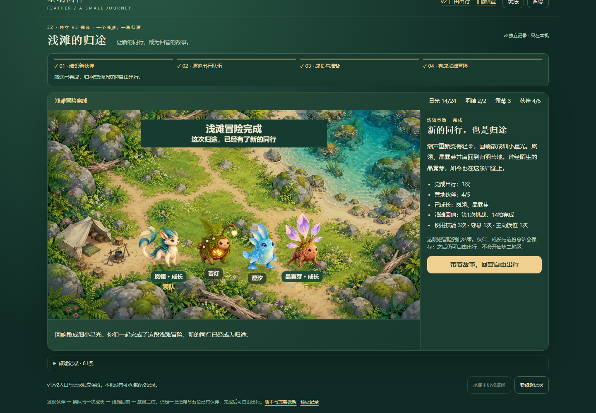
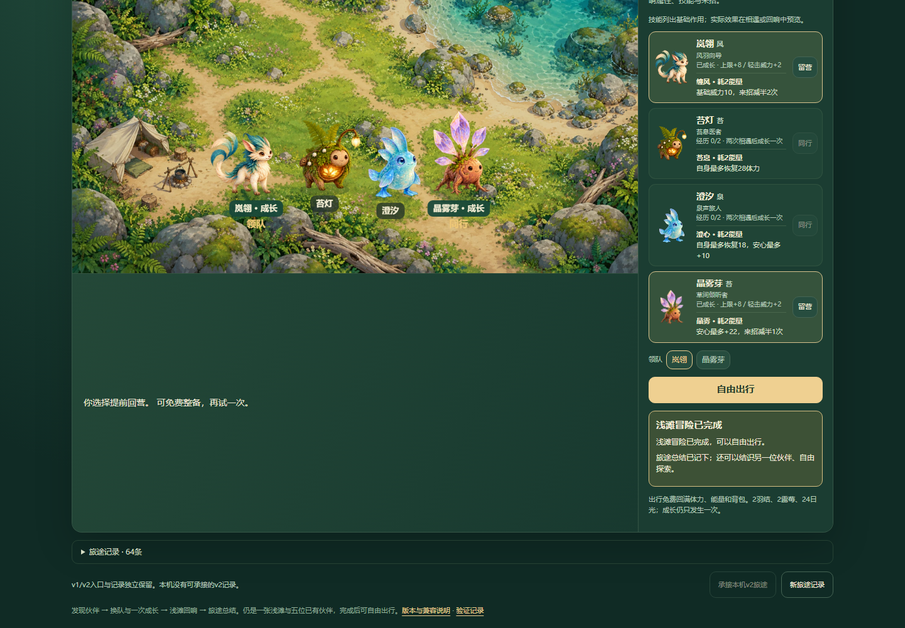
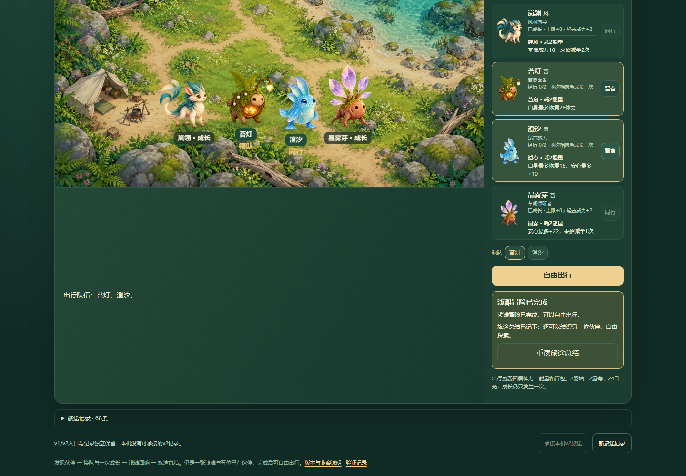
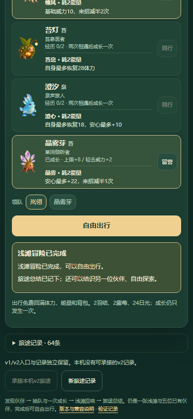
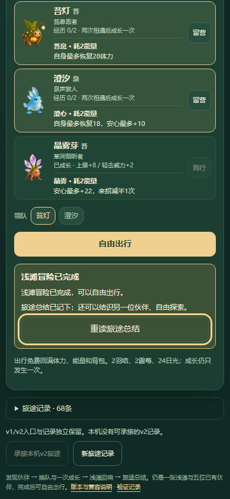
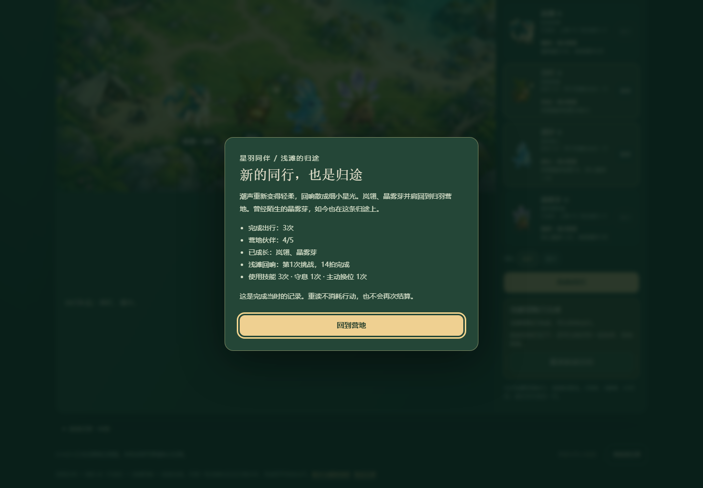
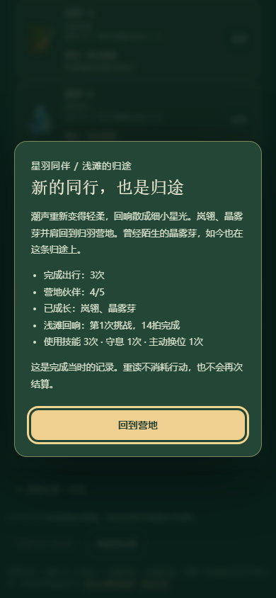

原候选3经实际普通UI通关确认：回营后缺少重读入口。现只加营地按钮与只读总结，保留原故事/统计，后续换队、旅行不改历史；不再结算、不改规则或存档。
试玩 · 完整范围与步骤 · 原代码普通UI通关及检查 · 实际首次结局文字 · 原生档案复用与七次重读 · 8组模型测试 · 下一条体验线索 · 覆盖索引
策略辅助非真人手感，窄屏模拟非真机。未验声音、性能、屏幕阅读器、审美。下一条回看战术反馈仅是有证据的体验候选，本轮未实现。






